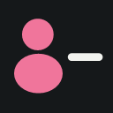

INSTAGRAM TAKİP YÖNETİMİ
Takip listen,
tek bir ekranda.
Instagram’ı aç, hesabına giriş yap ve araç çubuğundaki eklenti simgesine tıkla.
Instagram’ı aç ↗Nasıl kullanılır?
- Chrome’un sağ üstündeki yapboz simgesinden bu eklentiyi sabitle.
- Instagram sekmesindeyken eklenti simgesine tıkla. Kısayol: Ctrl + Shift + Y.
- Önce Tüm takip ettiklerim veya Beni geri takip etmeyenler seçeneğini belirle, sonra Taramayı başlat düğmesine bas. İkinci seçenekte iki liste de tamamlanmadan sonuçlar açılmaz.
- Önce tek hesapta dene. Sonra istediğin hesapları veya Tümünü seç düğmesini kullan.
- Takibi bırak düğmesine basıp hesabı ve seçili sayısını kontrol ederek onayla.
İşlem sırasında
Sekmeyi açık ve mümkünse önde tut. Eklenti simgesine tekrar basmak devam eden işlemi sıfırlamaz. Paneli küçültebilir, işlemi duraklatabilir veya iptal edebilirsin.
Her kişi arasında 4–4,8 saniye, her 5 işlemden sonra 5 dakika mola vardır. Her olumlu işlemden sonra yaklaşık 1 saniye beklenip takip durumu ayrıca kontrol edilir.
Sayfayı yenilemek işlemi durdurur. Sonuç belirsizse veya Instagram isteği reddederse araç durur. Gönderilmiş bir işlem iptalden önce uygulanmış olabilir.
Bir sekmede tarama veya takip bırakma sürerken ikinci sekmede yeni işlem başlatılamaz. Bekleme ve duraklatma boyunca da bu koruma devam eder.
Tarama doğrudan takip edilen listesini alır; ayrı profil bilgisi isteği göndermez. Liste Instagram’ın döndürdüğü son sayfaya kadar okunur. Profildeki toplam sayıyla karşılaştırılmadığı sonuç ekranında belirtilir.
İşlem bittiğinde Raporu indir ile doğrulanan, doğrulanamayan ve işlenmeyen hesapları JSON dosyası olarak kaydedebilirsin. Raporu sonuçlara dönmeden önce indir.
Başlıktaki ≡ Canlı günlük düğmesi istekleri, HTTP durumlarını, yanıt türlerini ve ilerlemeyi ayrı sekmede gösterir. Günlüğü indir düğmesiyle tanı kaydını dışa aktarabilirsin.
Hangi hesaplar çıkarılır?
Seçtiğin listedeki hesaplar. Tüm takip ettiklerim modunda karşılıklı takip edilenler de dahildir; geri takip etmeyenler modunda yalnızca geri takip etmeyen hesaplar listelenir. Bu araç tamamlanan işlemleri geri alamaz. Instagram toplu işlemleri kısıtlayabilir.
Verilerin
Şifre istemez; Instagram sekmesindeki açık oturumunu kullanır. Ayarlar ve yarım kalan tarama eklentinin yerel depolamasında tutulur. Canlı günlükte çerez, şifre, hesap adları, istek başlıkları veya yanıt gövdeleri tutulmaz. Analiz hizmeti veya internet üzerindeki bir günlük sunucusu kullanılmaz; profil fotoğrafları Instagram’ın verdiği adreslerden yüklenir.
Verileri silmek için eklentiyi kaldırabilirsin. Kişisel hesapların bulunduğu bir paketi başkalarıyla paylaşma; bu kurulum paketi hesap verisi içermez.